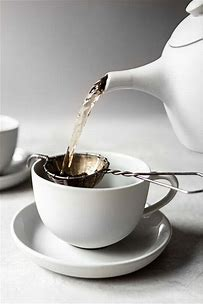

How to Make Loose-Leaf Tea

If you choose to steep loose-leaf tea, you'll need a tea infuser. These may come inside your teapot.
to pop inside a single cup.
- Fill the infuser with the amount of tea specified on the package for how many servings you need.
- Bring fresh, cold water to a rolling boil.
- Once boiling, pour over the tea infuser (or lower the infuser into the pot) and steep according to the timing above based on your tea variety.
- Remove the tea infuser from the cup or pot.
- If desired, finish with milk, your preferred sweetener, or a slice of citrus.